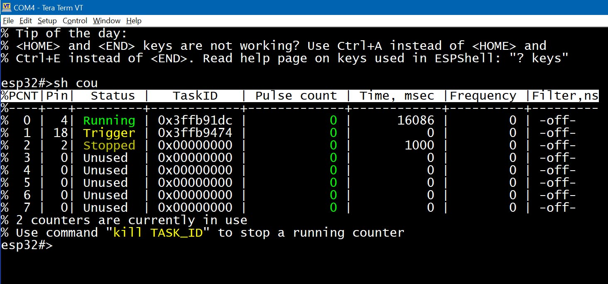

ESP32 содержит встроенный аппаратный модуль подсчёта импульсов, состоящий из 8 (в оригинальной ESP32) или меньше (в новых моделях) блоков PCNT (см. техническое описание ESP32). Эти счётчики могут работать параллельно, обеспечивая до 8 независимых частотомеров или счётчиков импульсов.
Управление счётчиками осуществляется двумя командами: "count" и "show counters".
Команда "count" используется для подсчёта импульсов на выбранном пине. Она принимает несколько аргументов:
Синтаксис команды:
count PIN [ TIME_MS | infinite | trigger | filter NANOSECONDS ]*
PIN — номер пина, TIME_MS — длительность измерения в миллисекундах (по умолчанию 1000 мс). Ключевое слово "infinite" задаёт очень большую длительность (см. примеры ниже).
Порядок аргументов не важен, команды "count 4 trigger infinite" и "count 4 infinite trigger" идентичны.
Ключевое слово "trigger" заставляет счётчик ждать первого импульса перед началом измерения. Это полезно, если источник импульсов — не постоянный генератор.
Ключевое слово "filter NANOSECONDS" позволяет игнорировать импульсы короче указанного порога.
В самой простой форме команда "count" требует только номер пина.
Пример: измерение частоты на пине #2
esp32#>count 2 % Counting pulses on GPIO2...(pressto stop) % 0 pulses in 1.000 seconds (0.0 Hz, 0 IRQs) esp32#>
По умолчанию ESPShell измеряет в течение 1000 мс. Для низкочастотных сигналов можно указать более длительный интервал:
Пример: считать импульсы на пине #2 за 10 секунд
esp32#>count 2 10000 % Counting pulses on GPIO2...(pressto stop) % 0 pulses in 10.000 seconds (0.0 Hz, 0 IRQs) esp32#>
Также можно использовать ключевое слово "infinite" вместо числа: "count 2 infinite". Это задаёт длительность 264 микросекунд — практически безлимитную.
Рассмотрим ситуацию: пользователь запускает счёт на пине #4, а затем подключает к нему ШИМ-сигнал. Счётчик начнёт работать раньше, чем появятся импульсы, и результат будет искажен: хотя количество импульсов будет посчитано правильно, но частота будет определена неверно.
Вместо простой команды "count 4" рекомендуется использовать "trigger", чтобы отсчёт начался только с первого импульса.
Можно игнорировать импульсы короче заданного порога с помощью "filter":
esp32#> count 4 filter 100
Команда выше **игнорирует** импульсы короче 100 нс.
Минимальное значение фильтра зависит от частоты шины APB (обычно 80 МГц), то есть 25 нс. Максимальное — около 25 700 нс.
Фильтрация полезна, например, для подавления дребезга кнопок.
Чтобы узнать допустимые значения, введите команду без значения:
esp32#>count 4 filter
% Filter time in nanoseconds is expected [25 .. 25575]
% Step is 25ns; values like 125 or 149 will be rounded
% Missing arguments. ("? count" for help)
esp32#>
Пример: Подключите выход ШИМ на пине #2 (10 МГц) к пину #4:
esp32#>pwm 2 10000000
esp32#>
esp32#>count 4 filter 300
% Counting pulses on GPIO4...(press to stop)
% 0 pulses in 1.001 seconds (0 Hz, 0 IRQs)
Сигнал (ширина 100 нс) короче фильтра (300 нс), он игнорируется.
Теперь уменьшим фильтр до 50 нс:
esp32#>count 4 filter 50
% Counting pulses on GPIO4...(press to stop)
% 10000000 pulses in 1.000 seconds (10000000 Hz, 500 IRQs)
Теперь импульсы учитываются.
Команда "count" блокирует дальнейший ввод до завершения. Чтобы запустить её в фоне, используйте символ "&".
Это удобно для длительных или бесконечных измерений, например, для отслеживания срабатывания дверного датчика. При этом вы можете продолжать вводить команды.
Пример: считать импульсы 1 000 000 мс (в фоновом режиме)
esp32#>count 4 1000000 & % Background task started % Use "kill 0x3ffb8ce4" to stop % Counting pulses on GPIO4... esp32#> esp32#>kill 0x3ffb8ce4 % 0 pulses in 11.895 seconds (0.0 Hz, 0 IRQs) % Command "count" finished esp32#>
Подсказка: выделите мышкой и вставьте команду "kill"
Вы можете прервать подсчёт в любой момент нажатием
Пример: запустить счётчик и остановить его:
esp32#>count 4 999999 &
% Background task started
% Use "kill 0x3fca3914" to stop
% Counting pulses on GPIO4...
esp32#>
esp32#>kill 0x3fca3914
% 0 pulses in 8.984 seconds (0 Hz, 0 IRQs)
% Command "count" finished
esp32#>
Остановка безопасна — накопленные данные сохраняются.
Для получения текущего состояния используйте команду "show counters". Она работает только для запущенных в фоне счётчиков.

Рис. 1: вывод команды "show counters"
"PCNT" — номер аппаратного счётчика. "Status" — текущее состояние: "Trigger", "Running" или "Stopped". "TaskID" — ID фоновой задачи, пригодный для "kill", "suspend", "resume" (последние две — только для фоновых задач).
"Time, msec" — сколько времени прошло с начала подсчёта. Для режима "trigger" отсчёт начинается с первого импульса.
"Filter, ns" — активный фильтр или "-off-", если не установлен.
Для сброса счётчика (работающего или остановленного) используйте команду "count PIN clear". Она сбрасывает все счётчики, привязанные к указанному пину.
Соедините пины 2 и 4 перемычкой. Запустите генерацию ШИМ на пине 2 и счёт на пине 4:
Пример: запустить ШИМ и измерить его частоту
esp32#>pwm 2 20000 esp32#>count 4 % Counting pulses on GPIO4...(pressto stop) % 20000 pulses in 1.000 seconds (20000.0 Hz, 0 IRQs) esp32#>
Это удобно для проверки сигналов, генерируемых на пинах ESP32.